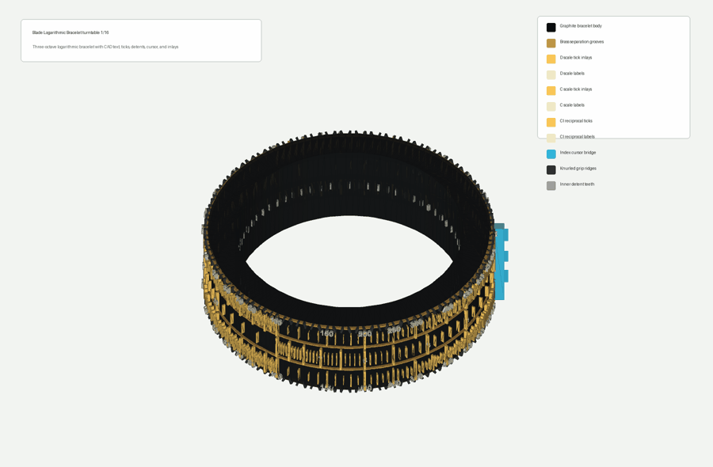

Has Anyone Actually Produced Anything Valuable From a Multi-Agent System?
Coding agents and code generation work. Outside code, my results have been much less convincing.
Every time I rebuild a multi-agent system, I come back to the same uncomfortable split. Coding agents work. Code generation works. A good single agent, pointed at a repo with tools, tests, and tight feedback, can produce real value. It can read code, make changes, run checks, and leave behind a diff that can be reviewed. That is not magic, but it is economically useful.
Outside code, my results have been much less convincing. I have tried multi-agent workflows for images, CAD, BIM, design packages, provider councils, and artifact generation. The pattern is consistent: a single strong model with a clean prompt often beats a committee of agents. The committee adds latency, cost, coordination failure, and prompt dilution. What it rarely adds is judgment.
Blade is my attempt to make this question falsifiable. The architecture is evidence-first: agents do not
just chat. Work is submitted through the Blade CLI and API into task rooms. Roles are registered as
versioned skills and tools. Events go through NATS JetStream. Outputs go to NATS Object Store. Every run is
supposed to end with a blade.evidence.v1 manifest containing provider calls, object keys,
replay acknowledgements, tests, logs, hashes, and a verdict. The point is to stop calling a transcript
success.
The control plane is written in Elixir. Long-running orchestration is handled through Oban-backed jobs, while runtime work is pushed out to Kubernetes workers instead of local subprocesses. For proof runs, those workers launch as k8s Jobs using Kata isolation, so each agent role runs in a constrained VM-like sandbox. That gives the system a real execution boundary: queued work, isolated workers, durable events, stored artifacts, and replayable evidence.
The image experiments were the clearest. In the baseline, OpenAI generated both sides: the single-agent side used the raw prompt, while the multi-agent side used an OpenAI planner, prompt writer, and critic before generation. Multi-agent won 0 of 12 prompts; single-agent won 11, with one tie. In the stricter version, the chain used a DeepSeek planner, Kimi prompt writer, OpenAI critic, OpenAI image generation, and OpenAI/Gemini blinded judging. Multi-agent won 1 of 10; single-agent won 8. Later small suites were mixed, but not a durable win.
CAD was more interesting, but still not proof of agent intelligence. The repo has real artifact packages: a PCB enclosure, logarithmic slide-rule bracelet, VTOL concept, and F1-style sequential gearbox. The roles included CAD modeler, mesh QA, render engineer, printability reviewer, assembly planner, gear-geometry agent, shift agent, powerflow agent, and proof agent. They produced STEP, STL, GLB, drawings, renders, BOMs, mesh QA, and reports. Useful artifacts, yes. But most CAD runs were local demos with no provider calls or JetStream replay, so they prove the artifact pipeline more than they prove multi-agent reasoning.

BIM is the closest thing to a real multi-agent win. A DeepSeek-bound remote k8s run used BIM program, modeler, geometry, coordination, code-rules, quantity, render, artist, and integrator agents. It produced IFC-style export, GLB, viewer, schedules, reports, Object Store artifacts, and replay validation. But the label matters: schematic BIM proof, not permit-ready BIM.
My conclusion: multi-agent systems have value when they enforce process, evidence, isolation, and auditability. They are not automatically better thinkers. For generation, a single capable agent often wins.